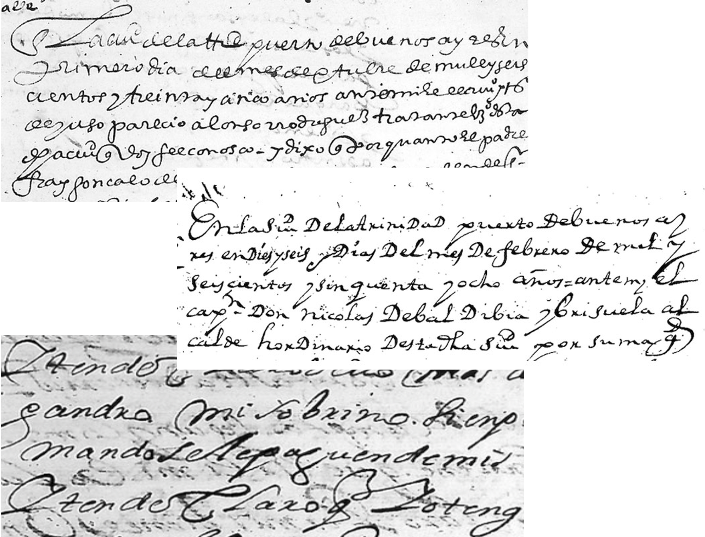
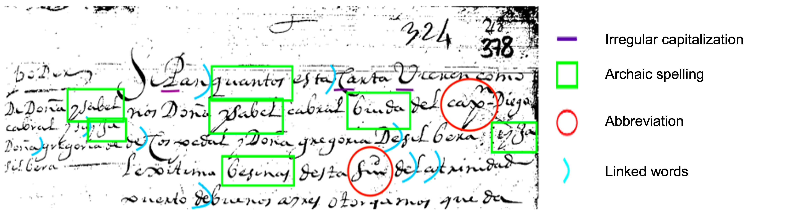
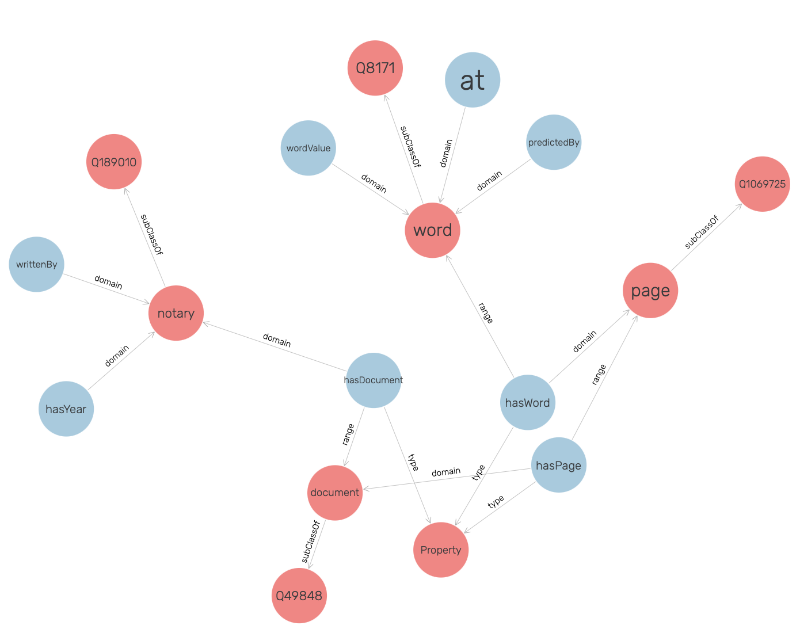

This work was supported by the National Endowment for the Humanities under Grant No. HAA-271747-20.


Notary records contain abundant information relevant to historical inquiry but are in physical form and hence, searching for information in these documents could be painstaking. We present a novel document retrieval system that allows users to search for a keyword in digitized copies of physical records. The system uses cleaned and denoised images to search a keyword using optical character recognition (OCR) models re-trained on labeled data provided by experts. The word predictions, bounding boxes, and other information are stored as a knowledge graph (KG). A keyword query is then mapped to a graph query on the KG. The results are ranked based on text matching. An intuitive user interface (UI) allows a user to search, correct, delete or draw more annotations that are used for retraining of the OCR models.
On the right, we have shown examples of 3 different handwritings. For our experiments, we selected the hand of Nicolas de Valdibia y Brizuela who by 1650, acted as the interim notary. Interim notaries did not receive extensive training, nor were they skilled scribes. The dataset thus consisted of very irregular and hard-to-read scripts.


Component A or Image Preprocessing was our first step. Scans contain different types of noise including discoloration, stains, ink bleeds and smudges. Throughout this preprocessing, techniques have been applied to clean the images without affecting the written content. This allowed us to retain information in the images without having abundance of redundant information.
GRAYSCALE: Convert original scans of images into shades of gray so more complex operations can be performed in shorter time
MEDIAN FILTER: To soften the images’ background & remove background noise
IMAGE BINARIZATON: Convert grayscale images to black and white to reduce information contained in images and increase training speed
WORDS DATASET (Component B): LabelImg and Colabeler to annotate and label words in each image. Images were then cropped using the bounding boxes and labels. We padded these to maintain similar dimensions. Finally, 83 images (166 manuscript pages), 26,482 words (6,401 unique) were generated.
Model Training was our next step, Component C. Out of the numerous ML OCR models available, Keras-OCR and YOLO-OCR yielded the most promising results. While experimenting, we tested with YOLOv2, YOLOv3, Calamari, Kraken & Tesseract [1]. The first two models performed unsatisfactorily where those bounding boxes that were detected were unlabeled. Calamari, Kraken & Tesseract were able to detect lines but were unable to detect the words within those lines. This is because they were trained on printed text. Moreover, we wanted to use word detections to build our system [2]. During training, the train to test split was 90 to 10 for both the OCRs.
We trained the recognizer using CRNN (kurupan) on our words dataset. We used the default detector, CRAFT (clovaai_general) as it was able to detect maximum of the words in a given image. Patches from 77 images were used. We observed that although most of the words were detected, the quality of recognition could be improved with further retraining.
The prediction was performed in four steps. Firstly, we passed a test image to the trained YOLO-OCR model to localize all the possible words’ coordinates and write them to a text file. Then, we cropped all the detected words and saved them as .png images. Thirdly, we resized the generated patches to match the input size of the CRNN model. Finally, we passed the .png images to the CRNN model to recognize the word.
The above two images show detection in Keras-OCR vs YOLO-OCR. Although fewer words were detected with respect to Keras-OCR, the quality of recognition was much better in YOLO-OCR.
[1] Alrasheed, N., Prasanna, S., Rowland, R., Rao, P., Grieco, V. and Wasserman, M., October. Evaluation of Deep Learning Techniques for Content Extraction in Spanish Colonial Notary Records. In Proceedings of the 3rd Workshop on Structuring and Understanding of Multimedia heritAge Contents, 23-30 (2021).
[2] Alrasheed, N., Rao, P. and Grieco, V., Character Recognition Of Seventeenth-Century Spanish American Notary Records Using Deep Learning. Digital Humanities Quarterly 15(4) (2021).
Component D focusses in structuring all the acquired data into directed graphs, that is, knowledge graphs (KG). We utilize knowledge graphs to address the challenges in accessing, reading, and searching within the documents. We serialized the information into turtle (.ttl) format. For the graph storage, we utilize an open-source, ultra-high performance graph database called Blazegraph (Component E). We used Resource Description Framework (RDF) standards and SPARQL queries for insertion and querying.
Knowledge: Predicted words, the bounding box coordinates for each prediction, the model type that predicted and the path of the images, that is which page or which document or ‘Rollo’.
Blazegraph provides multiple features, and we employed two of them in our tool:

Main features of our tool: